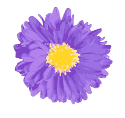
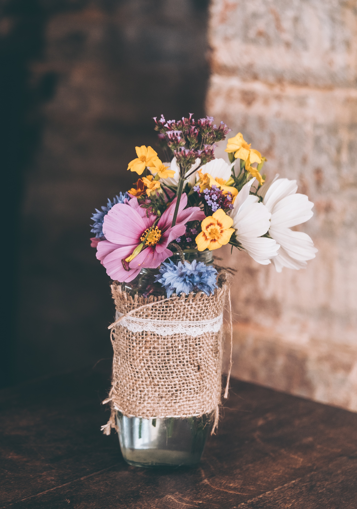

Blossom of Meridian
Afternoon tea experience


Unique Meridian Blend
This signature fusion black tea has been exclusively designed and hand-blended by Camellia's Tea House. The high-grade blend of aromatic and spicy Assam and Ceylon black teas provides a lovely depth to the brew.
White Oolong
Visually beautiful – the shaped, colourful leaves produce a mild, flowery, aromatic cup. Both the leaves and infusion have summer hay flavours creating and intense aromatic tea with notes of wild honey.
Chocolate Tea
The unmistakable flavour of chocolate without all the calories. A medium-bodied blend of Chinese and Ceylon black teas that has been combined with chocolate chips and coconut to produce a wonderfully light black tea with a strong aroma and undertones of chocolate.
White Apricot
A Gold Taste Award winning fusion tea that combines the refined character of a white tea with the honey-like sweetness of apricot pieces. The flowery undertones of marigold and rose round off the flavour, creating a truly delightful and refreshing tea.
Darjeeling First Flush
From the Himalayan foothills, this first harvest tea of the spring captures light, brigh, floral and delicate characteristics with earthy, grassy notes. This particular First Flush is one of the finest teas from the region – a connoisseur's delight.

Savoury
Dorset honey roasted ham
With saffron mayo on basil and spinach bread
Camomile poached prawn cocktail
With rye and caraway toast
Somerset mature cheddar cheese
Rose and gooseberry chutney on beetroot bread
Egg mayo and chives
With Nasturtium leaves on mini brioche bun
Sweet indulgence
Tart
Bergamot, local honey and elderflower
Choux
Coconut, mango and English rose
Gateaux
Cherry, berries and pistachio
Chocolate
Caramelia, sunflower, carrots
Plain and fruit scones
With strawberry and jasmine preserve and Cornish clotted cream

Meridian Cocktail of the Day
£16.50
Laurent-Perrier Brut
Pioneer of the Brut Nature category, Laurent‑Perrier Ultra Brut* is a wine with no added sugar. It expresses the quintessential character of champagne and was known as a “great wine without sugar”. Launched in 1981, this innovation is a true illustration of the House’s know‑how.
Laurent-Perrier Rosé
Cuvée Rosé was created in 1968 from the boldness and unique savoir‑faire of Laurent‑Perrier. Perfected at each stage of its making, Cuvée Rosé is acknowledged for its consistency and its high quality. It is characterized by its ripe red fruit aromas, a high intensity and great freshness.
Laurent-Perrier La Cuvée
This wine comes from the purest grape juice and it alone allows Laurent‑Perrier to craft “La Cuvée”, a champagne of great finesse and a beautiful freshness obtained after a long ageing process in our cellars. Laurent-Perrier’s style and personality are defined by its very high proportion of Chardonnay. Purity, freshness and elegance – essential characteristics, expressed in this champagne which embodies the spirit of the House.
Bottomless Champagne
Enjoy 90 minutes of free-flowing champagne.
Laurent-Perrier Brut: £95
Laurent-Perrier Rosé: £120


We bring you the colours and scents of the British countryside to Greenwich Peninsula. The famous British flowers spread happiness and contribute to our wellbeing. Flowers are nature’s healers. Their natural power has been known and used for centuries. The benefits are clear, just look for our edible flowers on the menu.
Flowers brighten our rooms and lives. The vivid colours, interesting shapes and unique scents send hidden messages. Red means love – rose is the first choice of lovers. White flowers mean purity, as the first flowers of the early spring, like snowdrops, are usually white. Yellow indicates loyalty, the way sunflowers follow the sun when they grow. Purple flowers stand for positivity, dahlias are perfect to send positive vibes. Flowers speak their own multi-sensual language and you can tell the right message with a carefully selected bouquet.

Kindly advise your server should you have any food allergies or dietary requirements.
Please note that a discretionary service charge of 12.5% will be added to your bill. All prices are inclusive of VAT at a prevailing rate.